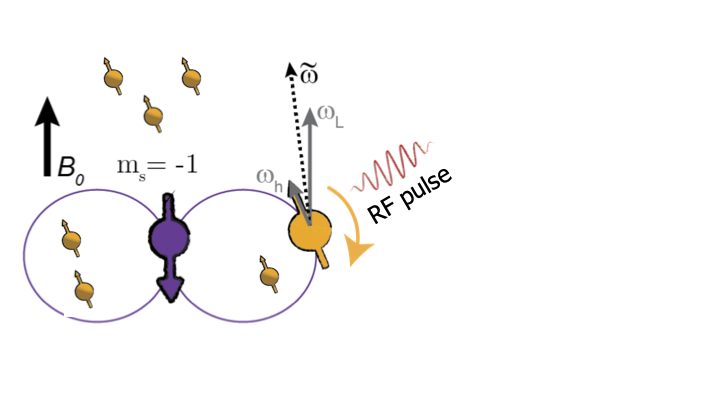
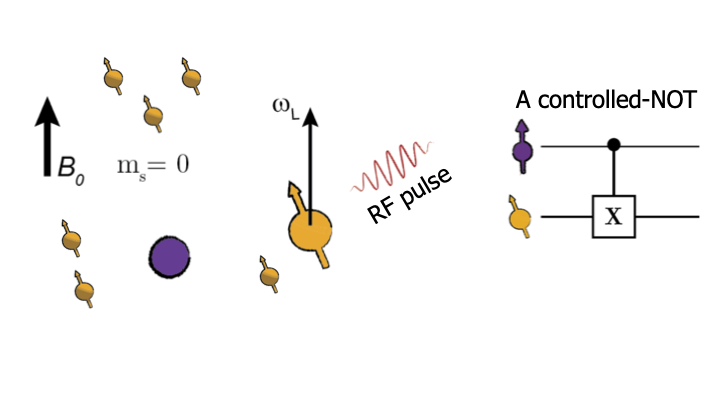

16.3. Operations on NV center qubits
In this upcoming segment, we will further delve into the intriguing world of NV Center qubits, expanding our discussion to incorporate the management of multiple nuclear spin qubits, and demonstrating the process of crafting a quantum network with these NV centers.
We’ve previously explored the fascinating ability to manipulate the electron spin of the NV center in diamond, utilizing it as a qubit. As we progress, we’ll uncover how we can extend the use of the NV center to also control multiple nuclear spin qubits, adding another dimension to our understanding.
But that’s not all - we’ll also explore how we can interconnect NV centers using photons, creating a comprehensive quantum network. This step brings us closer to the realization of a quantum internet, where multiple quantum systems interact in a coherent and controlled manner.
Hold on to your seats as we dive deeper into the enigmatic world of NV Center qubits and their potential applications in quantum computing and beyond.

The first thing to realize is that this electron spin is surrounded by an entire cloud of nuclear spins. About 1% of diamond consists of Carbon-13, which is a spin-1/2 system and the rest consists of Carbon-12, which has no spin.

Now normally speaking, these nuclear spins are a source of decoherence.
They flip-flop around randomly, and create a slowly-varying magnetic field on the NV-center. If we prepare the NV center in a quantum superposition state, then this fluctuating magnetic field changes the NV energy levels, that causes its phase evolution to become random and the quantum state is lost. This dephasing time is only about 5 microseconds, not that long.

Luckily, we can play a trick. We can apply a pulse that inverts the state of the NV. That if we flip it, this also inverts the effect of the magnetic field on the spin. So, if we have the same time before and after this flip, then the effect of the field exactly cancels and the quantum state is protected. We call this a spin echo. Of course this cancelation only works if the magnetic field is constant over time.

But don’t worry. As long as the field fluctuates slowly, we can just flip the electron spin multiple times, faster and faster, so that everything still averages out. In this graph you can see that this works.

We bring the electron spin in a super position and as we apply more and more pulses, we protect the electron spin longer and longer. In this way, we can even protect the quantum state for over a second, so really over macroscopic time scales and about six orders of magnitude better than without flipping the electron. We thus have very good coherence for the electron spins. How can we now use this to control multiple nuclear spins in the environment? The key here is that if the electron spin is, let’s say, in a state pointing downwards, then it creates a dipolar magnetic field.

Each nuclear spin has a different position and angle from the electron spin, so that each of them feels a different magnetic field. This gives each nuclear spin a unique frequency, so that we can apply radiofrequency pulses that are resonant only with a particular targeted nuclear spin. We can selectively control the spins. Moreover, if we now flip the electron to its zero state, it does not create a magnetic field.
Now the same RF pulse will have no effect on this nuclear spin. The evolution of the nuclear spin thus depends on the state of the electron spin: it rotates if the electron spin is in state -1, but it doesn’t rotate for state 0. This means we have a controlled quantum gate between the electron and nuclear spin. A CNOT.

That is exactly what we need for quantum computation. This enables us to control multiple nuclear spins near a single NV center. Each NV center becomes a system of 5 or even more qubits. How do we link these NV centres together into a network? For that we use photons.

Consider two NV centres in two different diamonds. We first make each of these NV centres emit a photon that is entangled with the spin state. And then we take these two photons and bring them together on a beam splitter.
After this beam splitter it is fundamentally impossible to tell which photon came from which NV center. This means if the detectors behind the beam splitter register a certain pattern of photons, then we know, that for example, one of the NV centres is pointing up and the other one is pointing down. Because we fundamentally cannot know which one is up and which one is down, quantum mechanics tells us that we have created an entangled state between two distant NV centers. Note that this does not succeed every time you try. Not all measurement outcomes lead to entanglement and photons are also often lost on their way to the detectors. This is not a problem because we are just trying to create entanglement to use it as a resource to perform quantum computation in our network. So we can just keep trying and trying until we get the right measurement outcome, which then heralds the generation of entangled state, and then we can use it in the network. This works. Here you see a state-of-the-art experiment in Delft, where they created entanglement between one NV center in the physics building, all the way on the left and another NV center, About 1,3 kilometres away, at the other side of the Delft campus. This experiment was done to provide a more stringent test if quantum entanglement really exists. The outcome was yes, quantum mechanics is still correct. So, we can now go and use this entanglement to build quantum networks for quantum technology. The next big step will be to combine the control of multiple qubits in each node with optical links to generate entanglement, in order to build increasingly larger quantum networks. all the way on the right. This experiment was done to provide a more stringent test if quantum entanglement really exists.
Of course there are still many challenges. We need really good quantum control over all these spins and photons.

We need to understand how to efficiently run quantum computations and error correction over these networks, and we need to build the complex electronics and software to control the networks. For this, we need physics, quantum computer science and engineering to come together. It will be really exciting to see if we can really build large-scale quantum networks and make quantum computation and quantum cryptography a reality.
Main takeways
Spin echo is a way to protect the electron spins from decoherence caused by the surrounding nuclear spins.
The dipolar magnetic field of the electron spin gives a unique energy splitting to differently positioned nuclear spins, allowing selective control.
The nuclear spin’s dependence on the electron spin state forms the basis for controlled quantum gates.
Using a beam splitter, photons can be used to generate entanglement between two distant NV centers.
16.3.1. Practice Quiz 7
16.3.1.1. Question 1: A quantum network
What is the procedure explained in the lecture for connecting different NV centers to build a quantum network? We shine a laser onto an NV center and:
The NV center reflects the light. This reflected light carries information about the quantum state, and is subsequently sent to a different NV. The collision of the light with the other NV causes it to carry that information too.
Measure the NV center to learn its state. This information is send to a different NV. Using this information we can manipulate the NV to reproduce the state at the first node.
Excite the electron. As the electron falls back, a photon is emitted. This photon is sent to a different NV and subsequently collected by its electron, after which the electron has reproduced the state of the first excited electron.
Similarly shine a laser on the other NV center. We let the photons, which are emitted due to electrons falling back, interfere. By measuring them, we effectively entangle the two NV centers.
Explanation
Reflected light does not carry information and measuring would destroy the quantum state and any entanglement. Letting a second NV center absorb an emitted photon from the NV center is in theory possible, but experimentally very inefficient. To date, photon interference of the emitted photons from two NV centers is the best way to entangle distant nodes.
16.3.2. Quiz 7: Operations on NV center qubits
16.3.2.1. Question 1: Controlling nuclear spins
What are the ways to control an individual nuclear spin in an NV center experiment? Mark the two that correctly apply.
Using microwave pulses.
Using the interaction with the electron.
Using radio frequencies.
Using lasers for nuclear excitations.
Applying a variable magnetic field.
Explanation
As explained in the lecture, nuclear spins are controlled using the interaction with the electron and using radio frequency pulses. Microwave pulses are used to control the electron spins.16.3.2.2. 2.1: NV eigenstates
Dynamical decoupling (DD)
In the lecture, Tim told us all about the trick we can apply to protect superpositions against decoherence from random phase rotations. This process is termed dynamical decoupling (DD). In the following questions, we will together mathematically investigate the beautiful features of dynamical decoupling.
The eigenstates of the spin- \(\frac{1}{2}\) carbon-13 nuclei are \(\left|s=-\frac{1}{2}\right\rangle\) and \(\left|s=\frac{1}{2}\right\rangle\). The values \(s\) also correspond to the eigenvalues of the spin observable. What would the eigenstates of the conventional spin-1 NV electron be?
\(|s=-1\rangle\) and \(|s=1\rangle\)
\(|s=-1\rangle,|s=0\rangle\) and \(|s=1\rangle\)
\(\left|s=-\frac{1}{2}\right\rangle\) and \(\left|s=\frac{1}{2}\right\rangle\)
\(|s=-1\rangle,\left|s=-\frac{1}{2}\right\rangle_{1}\left|s=\frac{1}{2}\right\rangle\), and \(|s=1\rangle\)
Hint (1 of 1): Check https://en.wikipedia.org/wiki/Spin_(physics)#Higher_spins, section “Higher Spins” for Next Hint the relevant \(\mathbf{S z}\) spin matrix.
Explanation
When solving for the eigenstates of the 3-by-3 matrix, one finds the three eigenvalues to be 1,0,-1.
16.3.2.3. Spin-1 Qubit 2.2
What combinations of eigenstates of the spin-1 NV electron (see question 2.1) can we use to make a qubit of the NV electron? Mark all that correctly apply.
\(|s=-1\rangle,|s=0\rangle\) and \(|s=1\rangle\)
\(|s=0\rangle\) and \(|s=1\rangle\)
\(|s=-1\rangle\) and \(|s=1\rangle\)
\(|s=-1\rangle\) and \(|s=0\rangle\)
Correct answer
An example of an admonition with a title. \(|s=0\rangle\) and \(|s=1\rangle\)
Correct answer
An example of an admonition with a title. \(|s=-1\rangle\) and \(|s=1\rangle\)
Correct answer
An example of an admonition with a title. \(|s=-1\rangle\) and \(|s=0\rangle\)
Explanation
The {-1,0,1} basis would correspond to a qutrit, not a qubit. All the other combinations are theoretically possible bases. However, in practice we only use the {-1,0} or {0,1} as qubit basis, since a high magnetic field is needed to separate the {-1,1} states by Zeeman splitting.
Explanation The {-1,0,1} basis would correspond to a qutrit, not a qubit. All the other combinations are theoretically possible bases. However, in practice we only use the {-1,0} or {0,1} as qubit basis, since a high magnetic field is needed to separate the {-1,1} states by Zeeman splitting.
16.3.2.4. Interaction with the environment 2.3
In the NV center, each carbon atom produces a small magnetic field, which has an effect on the electron spin’s energy. The magnetic fields caused by the carbon atoms thus influence the state of the electron. If this influence isn’t compensated for, it appears as unwanted noise. The noise caused by nuclear spins on the electron is proportional to the eigenvalue of the electron’s state (value corresponding to the eigenstate).
Judging from the eigenstates we have previously found for this system, which of the electron eigenstates are vulnerable to this noise? Mark all that correctly apply.
The \(|s=-1\rangle\) state
The \(|s=0\rangle\) state
The \(|s=1\rangle\) state
Explanation
Explanation Since \(-1\), \(0\) and \(1\) are the possible eigenvalues, and the noise is proportional to these values, only the non-zero eigenvalues correspond to states which are vulnerable to noise from the nuclear spins.
Zeeman splitting??
16.3.2.5. Interaction with the environment 2.4
Now, suppose we take the electron \(|s=-1\rangle\) eigenstate to be \(|1\rangle\) and the \(|s=0\rangle\) eigenstate to be \(|0\rangle\). This will be our qubit from now on. Since the spin bath is so big, and the nuclear spins are very weak, we can approximate the total noise the electron picks up from the environment as an almost constant (quasi-static) magnetic field. The noise picked up by the electron in a certain time \(\tau\) will be equal to \(\mathrm{N}\left(=e^{i \phi}\right.\) ). For the next question we will prepare our electron in the superposition
with \(\alpha\) and \(\beta\) random (complex) numbers under the condition the state is normalized. What does this superposition look like after this period \(\tau\) ? Express your answers in \(\alpha, \beta\) and N. Fill in Jalpha and \beta for \(\alpha\) and \(\beta\) respectively. Do not use spaces. Indicate multiplication with an asterisk (*).
Prefactor \(|0\rangle\)
Correct answer
\(\alpha\)
\alpha
Prefactor \(|1\rangle\)
Correct answer
\(N*\beta\)
N*\beta
Explanation
As seen in question \(2.3\), only the \(|1\rangle\) state picks up noise from the environment. The \(|0\rangle\) state remains unaffected. This is called dephasing of the qubit.
16.3.2.6. Interaction with the environment
\(0.0 / 1.0\) point (graded) Continuing with the created state from the last exercise, we now perform a bit flip on the electron. This is one of the \(\pi\) pulses shown in Tim’s second video at \(1: 20-2: 40\). What does the state now look like? Prefactor \(|0\rangle\)
Correct answer
\(N*\beta\) N*\beta
Prefactor \(|1\rangle\)
Correct answer
\(\alpha\)
\alpha
16.3.2.7. Interaction with the environment 2.6
0.0/1.0 point (graded) We again wait for another period of exactly \(\tau\), which thus introduces the exact same noise as before. What does the state look like after this waiting period? Don’t omit a potential global phase in the answer.
Prefactor \(|0\rangle\)
Correct answer
\(N*\beta\)
N*\beta
Prefactor \(|1\rangle\)
Correct answer
\(N*\alpha\)
N*\alpha
Explanation
You’ve probably answered \(N * \beta|0\rangle+N * \alpha|1\rangle\), which is of course correct. However, \(N\) here is a global phase factor (it appears in front of every state in the superposition). Global phase factors do not affect your state and can thus be neglected. Therefore, the answer \(\backslash\) betalket \(\{0\}+\backslash\) alphalket \(\{1\}\) is also right.
16.3.2.8. Interaction with the environment 2.7
We have now designed a pulse sequence which mitigates the noise, but does not recover our initial state. This is because we have only applied a \(\pi\) pulse in total, thus the outcome state is a flipped state. We now want to design a DD sequence which returns to the initial state. What is the shortest sequence that achieves this? Multiples of \(\tau\) indicate waiting periods where noise will occur, and \(\pi\) indicates a pi pulse, or bit flip.
\(\tau-\pi-2 \tau-\pi-\tau\)
\(\tau-\pi-\tau-\pi-\tau\)
\(\tau-\pi-2 \tau-2 \pi-2 \tau-\pi-\tau\)
\(\tau-\pi-\tau-\pi-\tau-\pi-\tau-\pi-\tau\)
Correct answer
\(\tau-\pi-2 \tau-\pi-\tau\)
Hint (1 of 1):
Carefully look at the steps we have taken up so far and at the state we ended in lastly. What has changed, and how do we get back at our initial state?
Explanation
As we have seen in the preceeding questions, the sequence of \(\tau-\pi-\tau\) resulted in a bit flip regarding our initial state. To get back at this initial state from the state we were in, we need to perform another bitflip. So, by repeating this first sequence we will get back at our initial state, which is what we wanted to achieve!
16.3.3. Additional reading
16.3.3.1. Loophole-free Bell test
Back in 2015, the group of professor Hanson from QuTech managed to prove entanglement by proving the Bell inequality. Read more about this here: Paper on Loophole-free Bell test https://www.nature.com/articles/nature15759
16.3.3.2. New: Entanglement on demand!
Scientists from Delft managed to create superposition faster than it would decohere, allowing deterministic entanglement. Paper on entanglement on demand https://www.nature.com/articles/s41586-018-0200-5
Or look at this video! https://www.youtube.com/watch?v=vWXkzOg3GOU
Video on entanglement on demand
16.3.3.3. Bonus question: Bandgap of a NV center (ungraded)

Fig. 16.1 Quantum Network
In the figure, you can see the so-called bandgap diagram of an NV center. The \(y\)-axis represents energy and the horizontal lines are the energy states. Each electron is represented by an up-or down-arrow.
In this particular bandgap diagram you can see six trapped electrons. This sixth electron is added by excitation of one of the initially trapped electrons from the valence band to a higher energy state. This vacancy is easily filled up with one of the many electrons present in the valence band. This new system, with 6 trapped electrons is called the NV minus state.
16.3.4. Bonus question: Bandgap of a NV center
Looking at the figure above. Why do we only use the 4 electrons that are trapped in the bandgap?
States in the bandgap are protected against the electron transfers to and from the diamond.
The number of possible qubit states for 6 trapped electrons is too large, making computation impossible.
The degenerate excited states are only symmetric with respect to the bandgap states.
Explanation
Electrons in the valence band can move around freely, so information cannot be stored in the spin of such an electron, or transferred for the purpose of reading out a nuclear spin. This is because such an electron may randomly leave the valence band state that it sits in, and be replaced by another electron from the valence band. The electrons inside the band gap are protected from the valence band, so we can avoid these random substitutions.